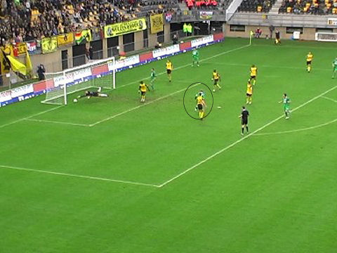
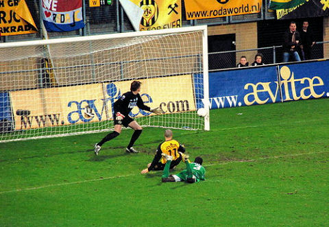
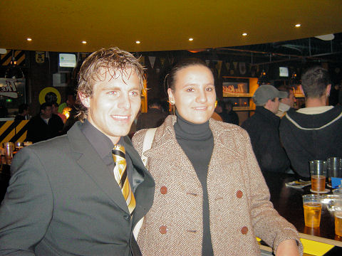

|
Roda JC - FC Groningen (5-1) 11 november 2007
|
De vijftig Groningen-supporters zien....
...Hadouir in de 1e minuut scoren uit een van de paal teruggesprongen bal van
Oper.
Even later weer een bal op de paal.

Een voorzet van Silva wordt door Nevland voorbij Castro gekopt: 1-1, (20').
Mooi schot van Lamah in de uiterste rechterhoek: 2-1, (23').
Roda domineert en maakt Groningen tot figurant. In de 35e min. tikt Oper een
goed
binnengehouden bal van Hadouir heel beheerst achter Van Loo: 3-1.

Een voorzet van Lamah bereikt Oper die opnieuw scoort: 4-1, (51').
foto sv-online
Kou, regen, zon, wind maar het geeft niet, Roda heeft geen enkele moeite met
FC Groningen.
Cissé op weg naar het doel.
Hij schiet de bal links van de keeper: 5-1, (66').
Afrikaanse danspasjes.
De wave gaat door het stadion. In het programmaboekje wordt in het kader van de
"historische wedstrijd" verwezen naar de 5-1 van 1982. Zo ver terug in de tijd
hoeft
niet. Kijk maar
>>>
Scheidsrechter Kuipers laat geen seconde extra spelen. Bedankjes aan oost, zuid
en west volgen.
Hinsetzen...
Na een akkefietje op west wordt de poort tijdelijk gesloten.
Een fan van Andres Oper in de Kickoff.
Cissé, Bodor en Meeuwis bezochten de Kickoff.

Marcel Meeuwis kondigt de nieuwe Rodagirl K E L L Y aan.
De man in het midden is de eigenaar van het spandoek BOSSEVEN (Boshoven,
Weert).
Jazeker, vijf goals !!
© Koempels Pleasure Dome
|